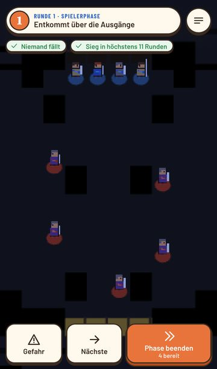
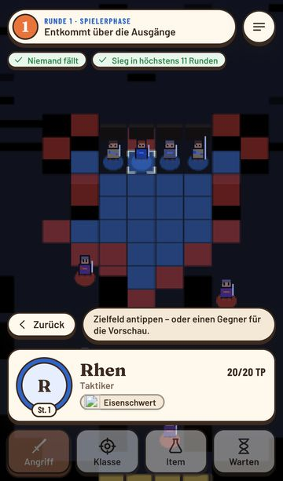
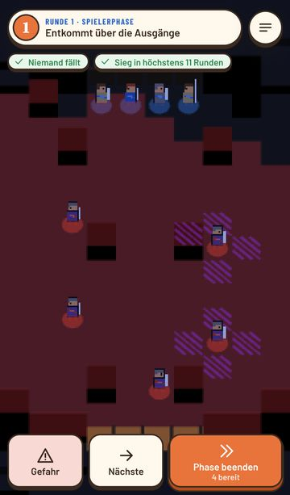
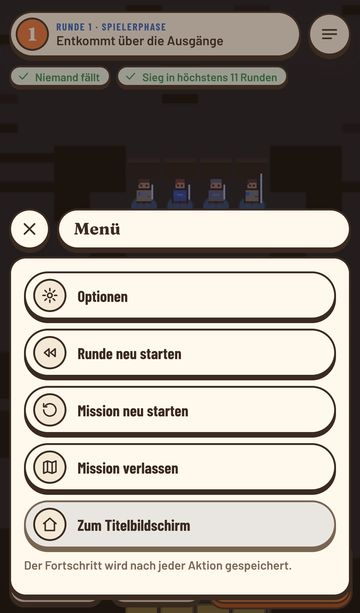

Das Brett lesbarer machen
Grundlage sind Screenshots der aktuellen App (Prolog, Runde 1, iPhone 13) und das Kampf-Mockup. Jede Idee steht als Bild da: links der Ist-Zustand, daneben Varianten auf dem echten Brett-Bild. Grüne Marken zeigen die Empfehlung; was entschieden wurde, steht ganz unten.
So sieht der Kampf heute aus
Aufgenommen ohne Grafikkarte, deshalb zeigt das Brett hier die Pixel-Ersatzgrafik statt der 3D-Figuren. Die Oberfläche darüber ist genau die echte. Auf einem Handy sieht das Brett aus wie in den Varianten weiter unten.

31
23
4
5- 1Kein Raster. Das 3D-Brett zeigt Felder nur über Bodentextur und Requisiten. Auf Wiese und Pflaster verschwimmen die Grenzen.
- 2Bereiche ohne Kanten. Blau und Rot sind zusammenhängende Flächen, die Reichweite muss man abschätzen.
- 3TP unsichtbar. Die Einheitenkarte zeigt TP nur für die gewählte Figur. Wer angeschlagen ist, sieht man auf dem Brett nicht.
- 4Gefahr ohne Abstufung. Eine Farbe für alles, eigene Figuren gehen darin unter.
- 5Regeln nur im Kopf. Waffendreieck, Elemente, Zustände, Groll und Verbluten stehen nirgends im Spiel zum Nachlesen.
Felder sichtbar machen, ohne das Diorama zu zerschneiden
Ein volles Gitter macht aus dem gemalten Diorama schnell ein Schachbrett. Drei Stärken, alle als Overlay auf Feldhöhe und nie vom Szenenlicht gefärbt (Art Direction §2.5).
TP über jeder Figur
Drei Formen für dasselbe Brett, mit denselben Werten: Brenna 18/27, Tobin 9/19, ein Bandit 12/22, Leutnant Hask voll. Die Leiste ist in Abschnitte zu 5 TP geteilt, damit man Schaden schätzen kann, ohne Zahlen zu lesen.
Wie gefährlich ist welches Feld?
Statt einer roten Fläche: eine rote Kante um alles, was Gegner in ihrer nächsten Phase erreichen, und darin eine Abstufung nach Anzahl der Angreifer. Die Zahl steht nur auf Feldern, die mindestens zwei Gegner erreichen.
Bevor ich ziehe: Was erwartet mich dort?
Der häufigste Fehler im Genre ist der Zug ins Feld, das drei Gegner erreichen. Beim Antippen eines Zielfelds zeigt das Brett deshalb, wer dorthin kommt, und eine Pille sagt es in Worten. Daneben der Geländebonus des Felds.
Wen kann ich diese Runde ausschalten?
Ist eine Einheit gewählt, rechnet das Spiel für jeden erreichbaren Gegner die Vorschau durch (wieder derselbe Formelcode). Fällt der Gegner bei einem Treffer, steht ein voller Totenkopf, reicht es nur mit Krit, ein halber. Der Marker ist ein dunkler Stein, kein Glutorange (DESIGN.md: Glut nie für Markierungen auf dem Brett). Optional oben eine Leiste mit allen Gegnern.
Was ist gerade passiert?
Bei 2× oder „Überspringen“ verpasst man leicht, wer getroffen wurde. Nach der Gegnerphase liegt deshalb ein kleiner Stein über der Einheitenkarte, der sich mit dem ersten Tipp aufs Brett von selbst schließt.
 Brenna von Hask getroffen
Brenna von Hask getroffen27 → 19 TP−8
 Tobin niedergestreckt
Tobin niedergestrecktverblutet nach 2 eigenen Phasen−10
 Kael weicht aus
Kael weicht ausBandit verfehlt0
Regeln im Spiel nachschlagen
Ein neuer Menüpunkt im Kampf, auf der Weltkarte und im Titel. Inhalt kommt wie alles andere aus YAML plus Locale-Schlüsseln, die Zahlen direkt aus balance.yaml und terrain.yaml. So stimmt das Handbuch automatisch, wenn das Balancing sich ändert.
- Vorteil
- +15 Treffer, +1 Schaden
- Nachteil
- −15 Treffer, −1 Schaden
- Bögen, Magie
- außerhalb des Dreiecks
In der Kampfvorschau zeigt ein grüner Pfeil am Waffen-Chip den Vorteil.
Kontext-„?“: Das blaue Fragezeichen erscheint an Stellen, die heute schon eine Zahl oder ein Symbol zeigen. Der Eintrag öffnet als Overlay-Blatt über dem Kampf, zurück geht es mit einem Tipp daneben. Die Prolog-Lektionen landen zusätzlich als eigene Kategorie im Handbuch, damit man sie später nachlesen kann.
Wenig Aufwand, spürbar im Spielgefühl
Der gesetzte Weg als dicker, runder Pfeil mit Spitze am Ziel. Man sieht sofort, ob die Figur um den Wald herum oder hindurch läuft.
Erschöpfte Figuren sind heute nur entsättigt. Ein kleines Häkchen über dem Kopf zeigt es eindeutig, auch bei Nacht- und Regenlicht.
Doppeltipp auf eine Figur zentriert sie. Eine Taste oder ein Zwei-Finger-Tipp zoomt auf die ganze Karte, damit man nach der Gegnerphase den Überblick zurückhat.
Die Regel gibt es schon. Nach dem Ziehen steht „Zurück“ mit Pfeil-Symbol direkt neben der Figur statt nur in der Leiste, und auf dem PC löst Rechtsklick dasselbe aus.
Wirkung gegen Aufwand
Meine Schätzung aus dem Code: Brett-Overlays laufen über render/board/overlays.ts und die DOM-Ebene der Verblutungs-Zähler, also überschaubar. Das Handbuch braucht Schema, Inhalte in zwei Sprachen und einen neuen Screen.
Was gilt
Ergebnis des Gesprächs mit dem Produktinhaber. Wo diese Liste von den Bildern oben abweicht, gilt die Liste.